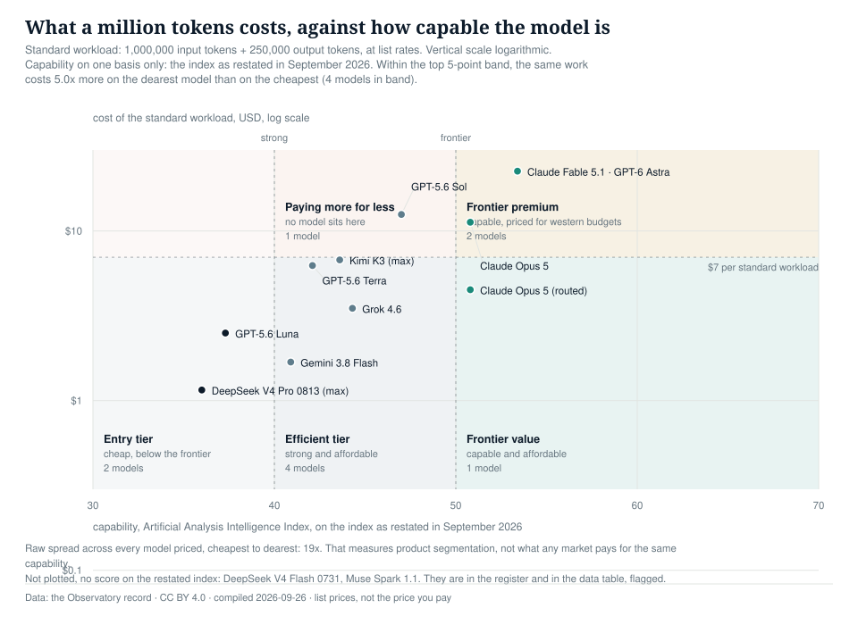
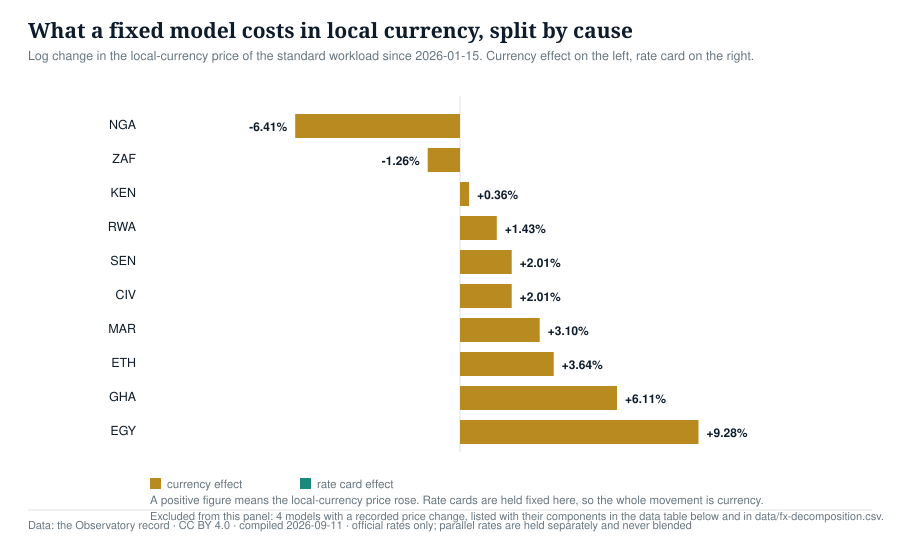
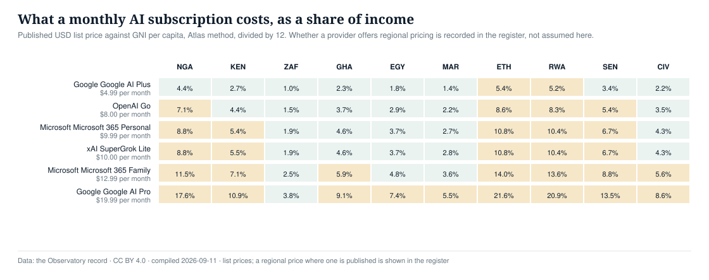
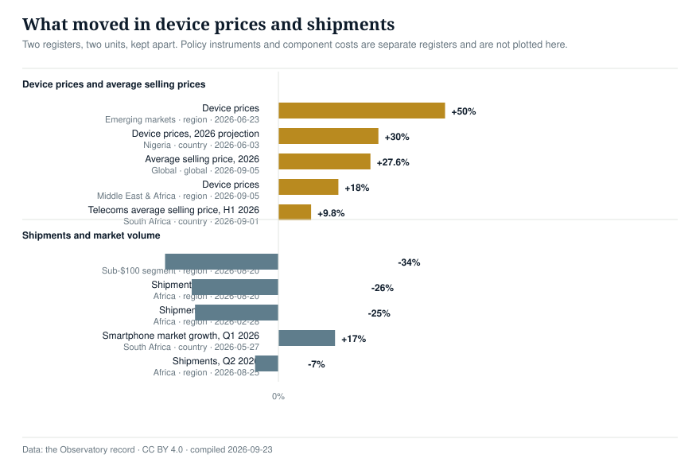

Figure 1What a million tokens costs, against how capable the model is
Standard workload of 1,000,000 input tokens and 250,000 output tokens, priced at list rates
{kind=link}

13 models on one capability scale
{kind=link}
Data table — the values plotted above
| Model | Capability (index) | Cost of standard workload, USD | Capability basis |
|---|---|---|---|
| Claude Fable 5.1, GPT-6 Astra | 53.4 | $22.50 | current |
| Claude Opus 5 (routed) | 50.8 | $4.50 | current |
| Claude Opus 5 | 50.8 | $11.25 | current |
| GPT-5.6 Sol | 47.0 | $12.50 | current |
| Grok 4.6 | 44.3 | $3.50 | current |
| Kimi K3 (max) | 43.6 | $6.75 | current |
| GPT-5.6 Terra | 42.1 | $6.25 | current |
| Gemini 3.8 Flash | 40.9 | $1.69 | current |
| GPT-5.6 Luna | 37.3 | $2.50 | current |
| DeepSeek V4 Pro 0813 (max) | 36.0 | $1.16 | current |
Figure 3A month of moderate use, as a share of monthly income
The same basket of use priced against what people earn, model by country. This is the affordability question the register exists to answer

Share of monthly GNI per capita, Atlas method
{kind=link}
Data table — the values plotted above (130 rows)
| Model | Country | Basket share of monthly income | Single workload share | Basket in minimum-wage hours | Single workload in hours | Currency | Workload cost USD | Monthly GNI per capita USD | Formula version | Held back by |
|---|---|---|---|---|---|---|---|---|---|---|
| Claude Fable 5.1 | CIV | 194.24% | 9.71% | 595.2 | 29.76 | XOF | 22.5000 | 231.67 | A-1.0 | minimum-wage source is industry_body |
| Claude Fable 5.1 | EGY | 165.64% | 8.28% | 693.6 | 34.68 | EGP | 22.5000 | 271.67 | A-1.0 | headline eligible |
| Claude Fable 5.1 | ETH | 486.49% | 24.32% | 22.5000 | 92.50 | A-1.0 | no statutory minimum wage | |||
| Claude Fable 5.1 | GHA | 205.32% | 10.27% | 1,899.3 | 94.96 | GHS | 22.5000 | 219.17 | A-1.0 | minimum-wage source is trade_reporting |
| Claude Fable 5.1 | KEN | 245.45% | 12.27% | 629.6 | 31.48 | KES | 22.5000 | 183.33 | A-1.0 | headline eligible |
| Claude Fable 5.1 | MAR | 123.85% | 6.19% | 238.9 | 11.94 | MAD | 22.5000 | 363.33 | A-1.0 | headline eligible |
| Claude Fable 5.1 | NGA | 397.06% | 19.85% | 1,482.5 | 74.13 | NGN | 22.5000 | 113.33 | A-1.0 | minimum-wage source is industry_body |
| Claude Fable 5.1 | RWA | 469.57% | 23.48% | 22.5000 | 95.83 | A-1.0 | no statutory minimum wage | |||
| Claude Fable 5.1 | SEN | 303.37% | 15.17% | 695.2 | 34.76 | XOF | 22.5000 | 148.33 | A-1.0 | minimum-wage source is trade_reporting |
| Claude Fable 5.1 | ZAF | 86.12% | 4.31% | 241.2 | 12.06 | ZAR | 22.5000 | 522.50 | A-1.0 | headline eligible |
| Claude Opus 5 | CIV | 97.12% | 4.86% | 297.6 | 14.88 | XOF | 11.2500 | 231.67 | A-1.0 | model price row is trade_reporting |
| Claude Opus 5 | EGY | 82.82% | 4.14% | 346.8 | 17.34 | EGP | 11.2500 | 271.67 | A-1.0 | model price row is trade_reporting |
| Claude Opus 5 | ETH | 243.24% | 12.16% | 11.2500 | 92.50 | A-1.0 | model price row is trade_reporting | |||
| Claude Opus 5 | GHA | 102.66% | 5.13% | 949.6 | 47.48 | GHS | 11.2500 | 219.17 | A-1.0 | model price row is trade_reporting |
| Claude Opus 5 | KEN | 122.73% | 6.14% | 314.8 | 15.74 | KES | 11.2500 | 183.33 | A-1.0 | model price row is trade_reporting |
| Claude Opus 5 | MAR | 61.93% | 3.10% | 119.4 | 5.97 | MAD | 11.2500 | 363.33 | A-1.0 | model price row is trade_reporting |
| Claude Opus 5 | NGA | 198.53% | 9.93% | 741.3 | 37.06 | NGN | 11.2500 | 113.33 | A-1.0 | model price row is trade_reporting |
| Claude Opus 5 | RWA | 234.78% | 11.74% | 11.2500 | 95.83 | A-1.0 | model price row is trade_reporting | |||
| Claude Opus 5 | SEN | 151.69% | 7.58% | 347.6 | 17.38 | XOF | 11.2500 | 148.33 | A-1.0 | model price row is trade_reporting |
| Claude Opus 5 | ZAF | 43.06% | 2.15% | 120.6 | 6.03 | ZAR | 11.2500 | 522.50 | A-1.0 | model price row is trade_reporting |
| Claude Opus 5 (routed) | CIV | 38.85% | 1.94% | 119.0 | 5.95 | XOF | 4.5000 | 231.67 | A-1.0 | model price row is trade_reporting |
| Claude Opus 5 (routed) | EGY | 33.13% | 1.66% | 138.7 | 6.94 | EGP | 4.5000 | 271.67 | A-1.0 | model price row is trade_reporting |
| Claude Opus 5 (routed) | ETH | 97.30% | 4.86% | 4.5000 | 92.50 | A-1.0 | model price row is trade_reporting | |||
| Claude Opus 5 (routed) | GHA | 41.06% | 2.05% | 379.9 | 18.99 | GHS | 4.5000 | 219.17 | A-1.0 | model price row is trade_reporting |
Showing 24 of 130 rows. The full series is in the downloadable CSV.
Figure 4What a fixed model costs in local currency, split by cause
The same model and the same rate card, priced in local currency. Currency movement moves the real price of intelligence with nothing changing on the rate card
{kind=link}

Official rates only; parallel rates are held separately
{kind=link}
Data table — the values plotted above (130 rows)
| Country | Currency | Model | Local index (base 100) | Currency effect | Rate card effect | Total | Rate type | Rate-card basis |
|---|---|---|---|---|---|---|---|---|
| CIV | XOF | Claude Fable 5.1 | 102.03 | +2.0100% | +0.0000% | +2.0100% | official | single observation, no change recorded |
| CIV | XOF | Claude Opus 5 | 102.03 | +2.0100% | +0.0000% | +2.0100% | official | single observation, no change recorded |
| CIV | XOF | Claude Opus 5 (routed) | 102.03 | +2.0100% | +0.0000% | +2.0100% | official | single observation, no change recorded |
| CIV | XOF | DeepSeek V4 Flash 0731 | 102.03 | +2.0100% | +0.0000% | +2.0100% | official | single observation, no change recorded |
| CIV | XOF | DeepSeek V4 Pro 0813 (max) | 1,224.36 | +2.0100% | +248.4907% | +250.5006% | official | recorded event |
| CIV | XOF | GPT-5.6 Luna | 20.41 | +2.0100% | -160.9438% | -158.9338% | official | recorded event |
| CIV | XOF | GPT-5.6 Sol | 81.62 | +2.0100% | -22.3144% | -20.3044% | official | recorded event |
| CIV | XOF | GPT-5.6 Terra | 102.03 | +2.0100% | +0.0000% | +2.0100% | official | single observation, no change recorded |
| CIV | XOF | GPT-6 Astra | 102.03 | +2.0100% | +0.0000% | +2.0100% | official | single observation, no change recorded |
| CIV | XOF | Gemini 3.8 Flash | 204.06 | +2.0100% | +69.3147% | +71.3247% | official | recorded event |
| CIV | XOF | Grok 4.6 | 102.03 | +2.0100% | +0.0000% | +2.0100% | official | single observation, no change recorded |
| CIV | XOF | Kimi K3 (max) | 102.03 | +2.0100% | +0.0000% | +2.0100% | official | single observation, no change recorded |
| CIV | XOF | Muse Spark 1.1 | 102.03 | +2.0100% | +0.0000% | +2.0100% | official | single observation, no change recorded |
| EGY | EGP | Claude Fable 5.1 | 109.72 | +9.2758% | +0.0000% | +9.2758% | official | single observation, no change recorded |
| EGY | EGP | Claude Opus 5 | 109.72 | +9.2758% | +0.0000% | +9.2758% | official | single observation, no change recorded |
| EGY | EGP | Claude Opus 5 (routed) | 109.72 | +9.2758% | +0.0000% | +9.2758% | official | single observation, no change recorded |
| EGY | EGP | DeepSeek V4 Flash 0731 | 109.72 | +9.2758% | +0.0000% | +9.2758% | official | single observation, no change recorded |
| EGY | EGP | DeepSeek V4 Pro 0813 (max) | 1,316.64 | +9.2758% | +248.4907% | +257.7665% | official | recorded event |
| EGY | EGP | GPT-5.6 Luna | 21.94 | +9.2758% | -160.9438% | -151.6680% | official | recorded event |
| EGY | EGP | GPT-5.6 Sol | 87.78 | +9.2758% | -22.3144% | -13.0385% | official | recorded event |
| EGY | EGP | GPT-5.6 Terra | 109.72 | +9.2758% | +0.0000% | +9.2758% | official | single observation, no change recorded |
| EGY | EGP | GPT-6 Astra | 109.72 | +9.2758% | +0.0000% | +9.2758% | official | single observation, no change recorded |
| EGY | EGP | Gemini 3.8 Flash | 219.44 | +9.2758% | +69.3147% | +78.5905% | official | recorded event |
| EGY | EGP | Grok 4.6 | 109.72 | +9.2758% | +0.0000% | +9.2758% | official | single observation, no change recorded |
Showing 24 of 130 rows. The full series is in the downloadable CSV.
Figure 5What a monthly AI subscription costs, as a share of income
Consumer subscriptions are how most people reach a frontier model, and they are priced per month rather than per token
{kind=link}

Published list price against GNI per capita, divided by 12
{kind=link}
Data table — the values plotted above (220 rows)
| Provider | Tier | Country | Price USD/month | Share of monthly income | Local price published | Local currency | Evidence |
|---|---|---|---|---|---|---|---|
| OpenAI | Go | CIV | 8 | 3.4532 | yes | NGN | derived |
| OpenAI | Go | EGY | 8 | 2.9448 | yes | NGN | derived |
| OpenAI | Go | ETH | 8 | 8.6486 | yes | NGN | derived |
| OpenAI | Go | GHA | 8 | 3.6502 | yes | NGN | derived |
| OpenAI | Go | KEN | 8 | 4.3636 | yes | NGN | derived |
| OpenAI | Go | MAR | 8 | 2.2018 | yes | NGN | derived |
| OpenAI | Go | NGA | 8 | 7.0588 | yes | NGN | derived |
| OpenAI | Go | RWA | 8 | 8.3478 | yes | NGN | derived |
| OpenAI | Go | SEN | 8 | 5.3933 | yes | NGN | derived |
| OpenAI | Go | ZAF | 8 | 1.5311 | yes | NGN | derived |
| Google AI Plus | CIV | 4.99 | 2.154 | yes | NGN | derived | |
| Google AI Plus | EGY | 4.99 | 1.8368 | yes | NGN | derived | |
| Google AI Plus | ETH | 4.99 | 5.3946 | yes | NGN | derived | |
| Google AI Plus | GHA | 4.99 | 2.2768 | yes | NGN | derived | |
| Google AI Plus | KEN | 4.99 | 2.7218 | yes | NGN | derived | |
| Google AI Plus | MAR | 4.99 | 1.3734 | yes | NGN | derived | |
| Google AI Plus | NGA | 4.99 | 4.4029 | yes | NGN | derived | |
| Google AI Plus | RWA | 4.99 | 5.207 | yes | NGN | derived | |
| Google AI Plus | SEN | 4.99 | 3.364 | yes | NGN | derived | |
| Google AI Plus | ZAF | 4.99 | 0.955 | yes | NGN | derived | |
| Google AI Pro | CIV | 19.99 | 8.6288 | yes | NGN | derived | |
| Google AI Pro | EGY | 19.99 | 7.3583 | yes | NGN | derived | |
| Google AI Pro | ETH | 19.99 | 21.6108 | yes | NGN | derived | |
| Google AI Pro | GHA | 19.99 | 9.1209 | yes | NGN | derived |
Showing 24 of 220 rows. The full series is in the downloadable CSV.
How people actually reach a model
A model with a fine price that cannot be paid for is priced at infinity. This layer records subscriptions, free tiers and whether a locally issued card is accepted. Evidence is labelled: "tested" only where a check was performed and dated, otherwise provider documents or reported, and "unclear" wherever no source states the fact.
Availability Register
Showing 18 of 60 rows; the full register is in the CSV below.
| Provider | Country | Signup | Local card | Local rails | Foreign card needed | Evidence |
|---|---|---|---|---|---|---|
| OpenAI | NGA | yes | no | no | true | reported |
| OpenAI | KEN | yes | unclear | no | unclear | provider_docs |
| OpenAI | ZAF | yes | unclear | no | unclear | provider_docs |
| OpenAI | GHA | yes | unclear | no | unclear | provider_docs |
| OpenAI | EGY | yes | unclear | no | unclear | provider_docs |
| OpenAI | MAR | yes | unclear | no | unclear | provider_docs |
| OpenAI | ETH | yes | unclear | no | unclear | provider_docs |
| OpenAI | RWA | yes | unclear | no | unclear | provider_docs |
| OpenAI | SEN | yes | unclear | no | unclear | provider_docs |
| OpenAI | CIV | yes | unclear | no | unclear | provider_docs |
| Anthropic | NGA | yes | no | no | true | reported |
| Anthropic | KEN | yes | unclear | no | unclear | provider_docs |
| Anthropic | ZAF | yes | unclear | no | unclear | provider_docs |
| Anthropic | GHA | yes | unclear | no | unclear | provider_docs |
| Anthropic | EGY | yes | unclear | no | unclear | provider_docs |
| Anthropic | MAR | yes | unclear | no | unclear | provider_docs |
| Anthropic | ETH | yes | unclear | no | unclear | provider_docs |
| Anthropic | RWA | yes | unclear | no | unclear | provider_docs |
Subscription Register
Showing 14 of 290 rows; the full register is in the CSV below.
| Provider | Tier | Country | USD/month | Share of monthly income | Local price |
|---|---|---|---|---|---|
| OpenAI | Free | NGA | 0 | 0.0 | no |
| OpenAI | Free | KEN | 0 | 0.0 | no |
| OpenAI | Free | ZAF | 0 | 0.0 | no |
| OpenAI | Free | GHA | 0 | 0.0 | no |
| OpenAI | Free | EGY | 0 | 0.0 | no |
| OpenAI | Free | MAR | 0 | 0.0 | no |
| OpenAI | Free | ETH | 0 | 0.0 | no |
| OpenAI | Free | RWA | 0 | 0.0 | no |
| OpenAI | Free | SEN | 0 | 0.0 | no |
| OpenAI | Free | CIV | 0 | 0.0 | no |
| OpenAI | Go | NGA | 8 | 7.0588 | yes |
| OpenAI | Go | KEN | 8 | 4.3636 | yes |
| OpenAI | Go | ZAF | 8 | 1.5311 | yes |
| OpenAI | Go | GHA | 8 | 3.6502 | yes |
Free Tier Register
Showing 18 of 29 rows; the full register is in the CSV below.
| Provider | Tier | Free tier | Limit | Model |
|---|---|---|---|---|
| OpenAI | Free | yes | Unlimited text chats with GPT-5.6 Luna subject to abuse guardrails. Uploads ('limited messages with uploads'), image generation, voice chats, deep research, memory/context and Codex access are all described only as 'limited' - no numeric cap published. | GPT-5.6 Luna |
| OpenAI | Go | yes | ||
| OpenAI | Plus | yes | ||
| OpenAI | Pro | yes | ||
| Anthropic | Free | yes | Chat on web, desktop and mobile; web search; file creation and code execution; memory across conversations; connectors; Create Artifacts; Projects (up to 5). Paid plans advertise 'more usage' but Anthropic publishes no numeric message cap for the free plan. Opus and Fable models are not available on free. | Sonnet and Haiku (Opus/Fable excluded) |
| Anthropic | Pro | yes | ||
| Anthropic | Max 5x | yes | ||
| Anthropic | Max 20x | yes | ||
| Anthropic | Team standard seat | yes | ||
| Anthropic | Team premium seat | yes | ||
| Free of charge | yes | Free plan gives access to 3.6 Flash and 'varying access to 3.1 Pro', Deep Research, Gemini Live, Canvas, Gems, image generation/editing and 15 GB storage. Gemini app usage limits are compute-based, refresh every five hours up to a weekly limit, and can be topped up with AI credits; no numeric cap published. | Gemini 3.6 Flash; varying access to Gemini 3.1 Pro | |
| Google AI Plus | yes | |||
| Google AI Pro | yes | |||
| Google AI Ultra 5x | yes | |||
| Google AI Ultra 20x | yes | |||
| Microsoft | Copilot (free) | yes | 'A free tier is available with a Microsoft account... with some capabilities subject to usage limits and more available through paid plans.' No numeric cap published. Separate Microsoft wording: 'Microsoft offers a limited free version of Copilot subject to available capacity and limits.' | Not disclosed by Microsoft |
| Microsoft | Microsoft 365 Premium (Copilot successor to Copilot Pro) | yes | ||
| Microsoft | Microsoft 365 Personal (includes limited Copilot AI) | yes |
Figure 2What moved in device prices and volumes
Recorded percentage changes. Prices and shipments are separate series and never mixed into one total
{kind=link}

13 records, February to September 2026
{kind=link}
Data table — the values plotted above
| Measure | Geography named | Scope | Change | Status | Evidence | Date |
|---|---|---|---|---|---|---|
| Device prices | Emerging markets | region | +50% | measured | industry_body | 2026-06-23 |
| Device prices, 2026 projection | Nigeria | country | +30% | projection | trade_reporting | 2026-06-03 |
| Average selling price, 2026 | Global | global | +27.6% | projection | industry_body | 2026-09-05 |
| Device prices | Middle East & Africa | region | +18% | measured | industry_body | 2026-09-05 |
| Telecoms average selling price, H1 2026 | South Africa | country | +9.8% | measured | unclear | 2026-09-01 |
| Shipments, Q2 2026 | Sub-$100 segment | region | -34% | measured | trade_reporting | 2026-08-20 |
| Shipments, 2026 forecast | Africa | region | -26% | forecast | industry_body | 2026-08-20 |
| Shipment outlook, 2026 | Africa | region | -25% | forecast | trade_reporting | 2026-02-28 |
| Smartphone market growth, Q1 2026 | South Africa | country | +17% | measured | industry_body | 2026-05-27 |
| Shipments, Q2 2026 | Africa | region | -7% | measured | trade_reporting | 2026-08-25 |
The price register
List prices, not the price you pay. Capability scores are on the index as restated in September 2026; scores published at launch are on an earlier scale and are flagged.
| Model | Standard workload | Per million tokens | Capability | Status | Date |
|---|---|---|---|---|---|
| Claude Fable 5.1Anthropic | $22.50 | $10.00 / $50.00 | 53.4restated basis | Reported | 2026-09-01Artificial Analysis / OpenRouter |
| GPT-6 AstraOpenAI | $22.50 | $10.00 / $50.00 | 52.7restated basis | Reported | 2026-09-03LLM Stats / Artificial Analysis |
| GPT-5.6 SolOpenAI | $12.50 | $5.00 / $30.00 | 47restated basis | Reported | 2026-07-09AIPricing Guru / macgpu |
| Claude Opus 5Anthropic | $11.25 | $5.00 / $25.00 | 50.8restated basis | Reported | 2026-07-24Coursiv / APIMaster |
| Kimi K3 (max)Moonshot AI | $6.75 | $3.00 / $15.00 | 43.6restated basis | Reported | 2026-07-16Kie AI / Artificial Analysis |
| GPT-5.6 TerraOpenAI | $6.25 | $2.50 / $15.00 | 42.1restated basis | Reported | 2026-07-09AIPricing Guru / LM Market Cap |
| Claude Opus 5 (routed)Anthropic | $4.50 | $2.00 / $10.00 | 50.8restated basis | Third Party | 2026-07-24APIMaster |
| Grok 4.6SpaceXAI | $3.50 | $2.00 / $6.00 | 44.3restated basis | Reported | 2026-08-01Artificial Analysis / FollowNews |
| GPT-5.6 LunaOpenAI | $2.50 | $1.00 / $6.00 | 37.3restated basis | Reported | 2026-07-09AIPricing Guru / LM Market Cap |
| Muse Spark 1.1Meta | $2.31 | $1.25 / $4.25 | 51 on no current scorenot plotted: no score on the restated index | Reported | 2026-07-09LinkedIn / Vercel AI Gateway |
| Gemini 3.8 FlashGoogle | $1.69 | $0.75 / $3.75 | 40.9restated basis | Official | 2026-09-02Google / PacketNebula / Artificial Analysis |
| DeepSeek V4 Pro 0813 (max)DeepSeek | $1.16 | $0.66 / $1.98 | 36restated basis | Official | 2026-08-13DeepSeek API docs / Artificial Analysis |
| DeepSeek V4 Flash 0731DeepSeek | $0.39 | $0.22 / $0.66 | 35 on no current scorenot plotted: no score on the restated index | Official | 2026-08-13DeepSeek API docs / MorphLLM |
The device registers
Four registers, each with one unit and one status vocabulary, so a global average selling price can never be read as an African one. Scope is stated on every row.
Device prices
Retail prices, price bands and average selling prices. One unit: currency or percentage change in price.
| Measure | Change | Scope | Status | Headline |
|---|---|---|---|---|
| Entry-level price band2026-09-08 · Legit.ng · archived | NGN 150,000–300,000 | countryNigeria | trade reporting / measured | quarantined |
| Average selling price, 20262026-09-05 · IDC · archived | +27.6% | globalGlobal | industry body / projection | quarantined |
| Device prices2026-09-05 · IDC via aggregated reporting · archived | +18% | regionMiddle East & Africa | industry body / measured | quarantined |
| Telecoms average selling price, H1 20262026-09-01 · NielsenIQ, State of the Retail Nation · archived | +9.8% | countrySouth Africa | unclear / measured | quarantined |
| Device prices2026-06-23 · IDC · archived | +50% | regionEmerging markets | industry body / measured | quarantined |
| Device prices, 2026 projection2026-06-03 · Aggregated reporting · archived | +30% | countryNigeria | trade reporting / projection | quarantined |
Device shipments
Units shipped and market growth. Never summed with prices.
| Measure | Change | Scope | Status | Headline |
|---|---|---|---|---|
| Shipments, Q2 20262026-08-25 · Omdia / Cyprus Mail · archived | -7% | regionAfrica | trade reporting / measured | quarantined |
| Shipments, 2026 forecast2026-08-20 · Omdia · archived | -26% | regionAfrica | industry body / forecast | quarantined |
| Shipments, Q2 20262026-08-20 · Omdia via TelecomLead | -34% | regionSub-$100 segment | trade reporting / measured | quarantined |
| Smartphone market growth, Q1 20262026-05-27 · IDC · archived | +17% | countrySouth Africa | industry body / measured | quarantined |
| Shipment outlook, 20262026-02-28 · Legit.ng / analyst forecast · archived | -25% | regionAfrica | trade reporting / forecast | quarantined |
Device policy
Excise duties, tariffs and levies. A proposal is never presented as an outcome.
| Measure | Change | Scope | Status | Headline |
|---|---|---|---|---|
| Excise duty on smartphones2026-05-14 · Kenya Finance Bill 2026 | +25% | countryKenya | trade reporting / proposal | quarantined |
Component costs
Memory and other input contract prices. The shared cause behind both device and compute prices.
| Measure | Change | Scope | Status | Headline |
|---|---|---|---|---|
| DRAM contract price, Q2 20262026-07-05 · TrendForce · archived | +63% | globalGlobal components | industry body / measured | headline |
How this record is kept
The standard workload
Input plus a quarter of output, which is the mix a typical interactive use of a frontier model produces. It is a defined unit, not an average bill. Prices are list rates from provider documentation or reporting, and a rate card is not a cost: a model that finishes a task in fewer steps can cost less than a cheaper one.
Capability
Scores come from the Artificial Analysis Intelligence Index. The index was restated in September 2026, so launch-era scores are not comparable with current ones. Every row carries its basis.
Known gaps
African providers and locally hosted inference are not yet priced here. On devices,
The monitoring feed
Every access signal recorded, newest first, with research, government and company sources tagged so a paper can be told from a headline.
- Mozambique INCM Develops Tariff System to Improve Mobile Data TransparencyPricing and affordability
- Record chip sales threaten higher prices for phones, PCs and gamingPricing and affordability
- Nigeria's new phone tracking policy could price millions offlinePolicy and regulation
- GSMA and PDAA Unveil Roadmap to Close Africa's Mobile Internet Usage Gap and Connect One Billion People by 2030InstitutionPolicy and regulation
- AI API Pricing 2026: Compare GPT, Claude, Gemini Token CostsPricing and affordability
- Sub-Saharan Africa faces digital divide as handset costs and usage gap persistPricing and affordability
- Kenya urged to enhance AI capacity for financial inclusion and securityInvestment and funding
- The price of AI is falling; why are enterprises still spending more? ExplainedPricing and affordability
- AMD Reportedly Plans 10% Price Hike for GPUs, AI Chips, Chipsets in 4Q26 as TSMC Costs RisePricing and affordability
- New GSMA Report Maps Rwanda's Path to Wider Digital Inclusion and Over 1 Million More Mobile Internet Users by 2031Investment and funding
- GSMA warns rising smartphone costs could deepen Nigeria's mobile internet gapPricing and affordability
- Mobile internet connects 4.8 billion globally, but 3.4 billion remain offlinePolicy and regulation
- Amodei wants to slow the AI frontier. Africa is still trying to reach itAccess and affordability
- Entry-level smartphone costs hit 76% of monthly income in Sub-Saharan AfricaPricing and affordability
- AI boom threatens smartphone affordabilityPricing and affordability
- Apple reportedly accepts Samsung's 1Q27 memory hike, raising the 2027 smartphone cost floorPricing and affordability
- GSMA warns of emerging global AI divide as three billion people remain offline and smartphone component costs soarInstitutionPolicy and regulation
- Africa's $40 Smartphone Ambition Runs Into Memory Prices and Customs CostsPricing and affordability
- Anthropic Claude API pricing 2026: Fable, Opus, Sonnet cache-read ratesPricing and affordability
- AI Skills and Compute Africa, AIMS partner to expand AI research and compute accessSkills and talent